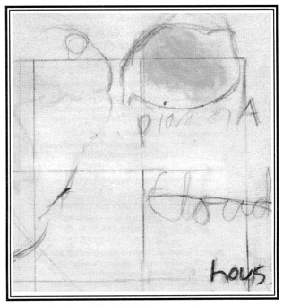

boundayr
The seizing of the blue social level, the red duality inert the yellow body form-
ing intimate contact, essential string, the beige of hemp and wall, green re-
sponding, green sado/shadow bottle, the plum enables us, the black beyond our
hours will satisfy this encounter,
substantial white of chair the presence in the
world of non-primary blue. Red enables us to be distinct
and
substantial, at
some point we must inhabit ourselves, the evidence is mauve and lively with
grey borders, to know, to feel, even
be
the inheriting white, the celery, that
light with which we regulate, become pink and peach, we blush and are fruit,
we bruise but did blossom formally, we are halfway there, we are capable of
giving the ultra acquamarine, we are absence of carnelian. Now
you are in the
violet world and she is turquoise and you want to tangle in each other's altro.
Inside the border, the heightened concern between her and a color she feels is
appropriate in this hour. The superiority of ivory sheets, the infinity of a door
only slightly ajar, the accomodation of ivory as you sleep, or the letting go. His
father on the floor but younger now, jar of petals rose, his rosey muscles far,
something bleached, these overtones, moving from ourselves, from you, your fu-
ture other, letting blues contain us, or
the white beseiged by red, overshadowed
and hounded by red, not left alone enough, thus sterilized, not enough in grey
memory, elephant ivory, the year of grey shadow, the large shape behind it,
the year of breaking thread around the boundary, the primacy of embroidered
meanings, petal of each pool and mouth, poppies opening in spite of every bor-
der or the yellow diminishing. Purple more or less
shut out, put off from the nor-
mal bit of emerald strictly set. The continuous mineral, the difficult fall, a
flood of pain that would not answer, the click going up and down the stairwell,
pessimism of windowsill, snow. White appears and re-appears and disappears,
boundaries of field, some owning or lowing, the subtracted smallness, the dots in
focus, magenta snow screen, all that falls away from you, black letters through
the page, your mother's name you did not keep, the list of addresses wanted, or-
ganization of winter greens under snow, that metallic current of restlessness
white brings
and the purple figs, the marble figs also, the inedible green marble
with its purple objectivity, she who was almost there without measure or inter-
vention.
 Paula Metallo
"boundayr" is included in notes preceding trust
by Kathleen Fraser, due from Lapis Press, Santa Monica, California, in the fall of 1987. The poem "boundayr" is also the text accompanying aquatints by Sam Francis in a collaborative limited edition book from Lapis Press.